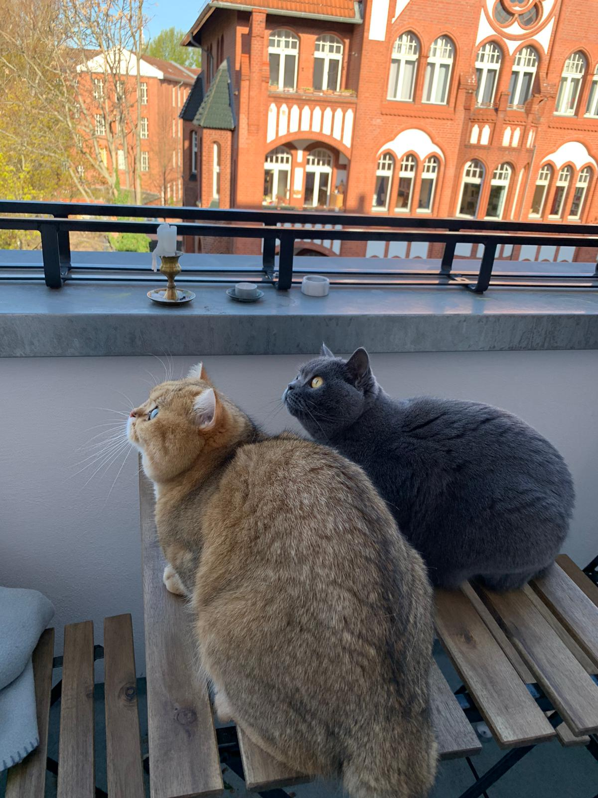

The British Shorthair, one of the most ancient cat breeds known, is the pedigreed version of the traditional British domestic cat, with a distinctively stocky body, dense coat, and broad face. The most familiar colour variant is the "British Blue", with a solid grey-blue coat, orange eyes, and a medium-sized tail. The breed has also been developed in a wide range of other colours and patterns, including tabby and colourpoint.
The British Shorthair cat is very easy to look after. Even if you’re new to keeping cats, this beautiful cat can bring lots of pleasure, and little stress. They have as few problems with their health as they do with their moods. The British Shorthair cat has maintained all its physical strength, endless energy, confident instincts and fearless mentality through to the present day. The cats slot into normal family life without much fuss, and, thanks to their easy-going nature, get on incredibly well with children and other pets. It is definitely easier to look after these calm shorthair cats than longhair cats. All that needs doing is brushing out loose hairs once a week. The British Shorthair cat is an ideal addition to the home thanks to its strong need for companionship, and its always pleasant and curious nature.

The Breed Standard for the British Shorthair Cat
Shape: Body large or medium-sized, muscular, broad chest, shoulders and back large and wide. Legs and feet short and stocky. Paws round and powerful. The tail is short and thick with a round tip. Solid and powerful, but still well-proportioned. With a good bone structure, a British Shorthair should have the appearance of a “round”, compact cat with a cobby body.
Head: The head is round and sturdy with a broad skull, very well developed neck, short and powerful. Strong chin. Nose short and wide, straight, gentle curve to the nose, only slight indentation.
Ears: Ears short and wide, gently rounded.
Eyes: Eye shape is large, round and broadly spaced, wide open.
Coat: The coat is short and dense all over, never sparse, with a thick, well-insulating undercoat. Not too soft – can be “crisp” to the touch and stand off from the body in a “fluffy” manner. Each hair should be the same colour from root to tip.
History
You may not realize it, but you probably grew up with the British Shorthair. He is the clever feline of Puss in Boots and the grinning Cheshire Cat of Alice in Wonderland.
The British Shorthair is native to England. With the rise of cat shows during the Victorian era, cat fanciers began to breed the cats to a particular standard and keep pedigrees for them. At the earliest cat shows, British Shorthairs were the only pedigreed cats exhibited. All others were simply described by coat type or color.
Two world wars devastated the breed, and few British Shorthairs remained after World War II. With the help of other breeds, the Shorthairs, as they are called in Britain, were revitalized.
The American Cat Association recognized the British Shorthair in 1967, but the Cat Fanciers Association did not accept it until 1980. Now, all cat associations recognize the breed.
0 Comments
Leave a Comment